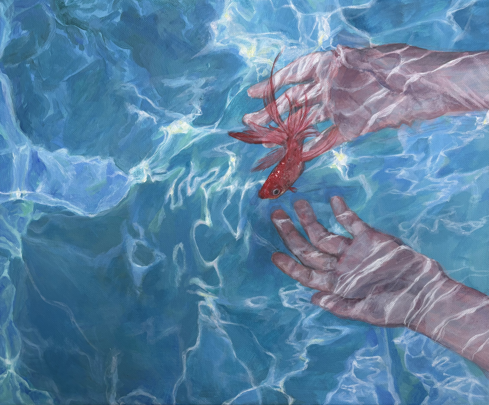
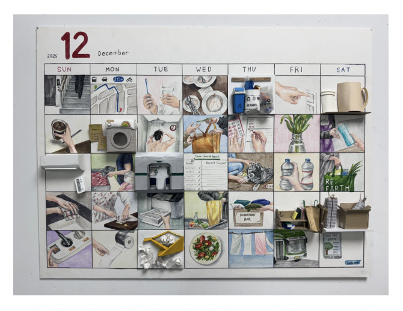
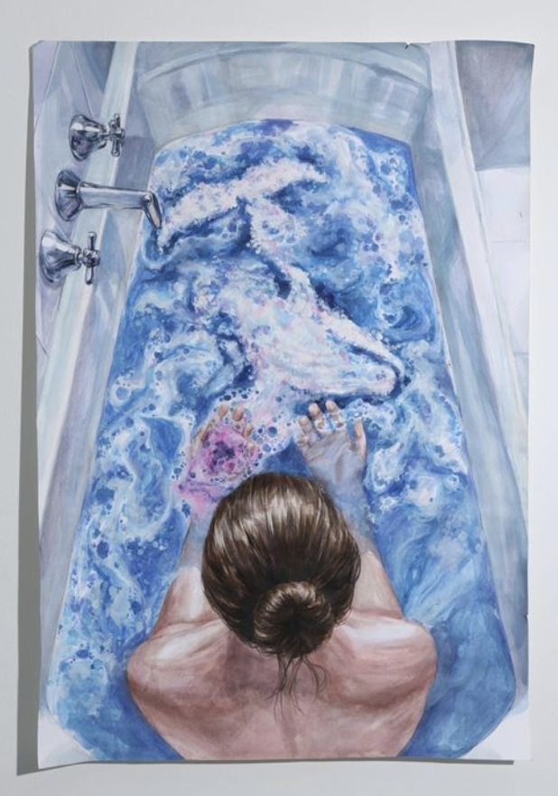
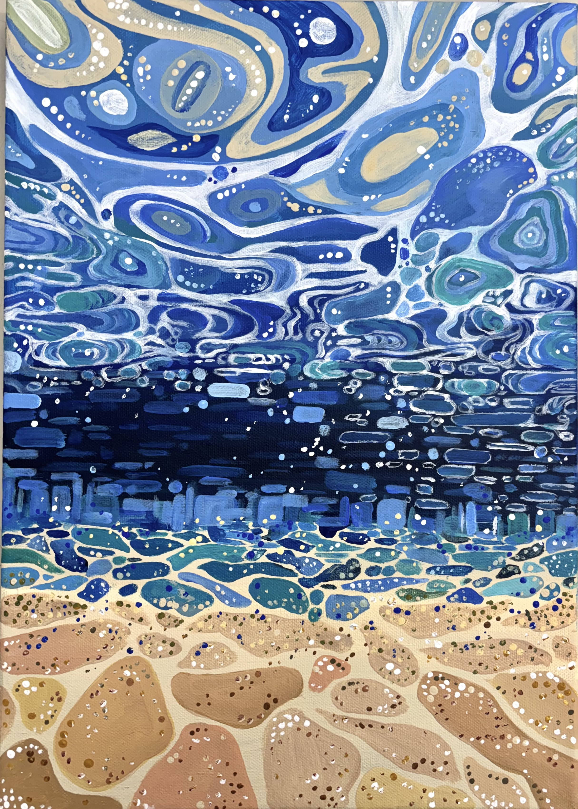

These are artworks by Yunnie Ha. They are all centered around the theme of bringing environmental awareness. Here are four pieces in the collection with a short explanation of the meaning of each artwork.

01 Human connection with marine life
The first artwork depicts a person reaching toward a fish underwater, creating a sense of connection between humans and marine ecosystems. It represents how human activity has significantly altered marine ecosystems, while plastic pollution, overfishing, and climate change threaten marine life. The artwork emphasizes that humans are not separate from nature, and that we depend on healthy oceans, thus we have a responsibility to protect them.

02 Consumerism and waste
The second artwork is a collage of everyday objects, suggesting modern consumption and materialism. The constant production and disposal of products contributes to resource depletion and waste. It therefore symbolizes the environmental consequences of the “buy-use-dispose” economy. A more sustainable approach would emphasize reducing consumption, reusing products, and recycling materials.

03 Water consumption and human dependence
The third artwork places a person within a large quantity of water, making water scarcity and water consumption central themes. Water is essential for ecosystems and human life, yet pollution and unsustainable use threaten freshwater resources. The artwork represents the paradox that although water surrounds us, clean and accessible water is a limited resource.

04 Ocean pollution and environmental change
The fourth artwork resembles a distorted or fragmented ocean landscape. Its swirling patterns represent waves, currents, or an ocean disrupted by human activity. This connects strongly to marine pollution: plastic and other forms of waste can damage habitats, threaten biodiversity, and enter marine food chains. The abstract style intentionally makes the viewer look more closely at something that is difficult to perceive directly, and thus force them to engage longer with the piece.